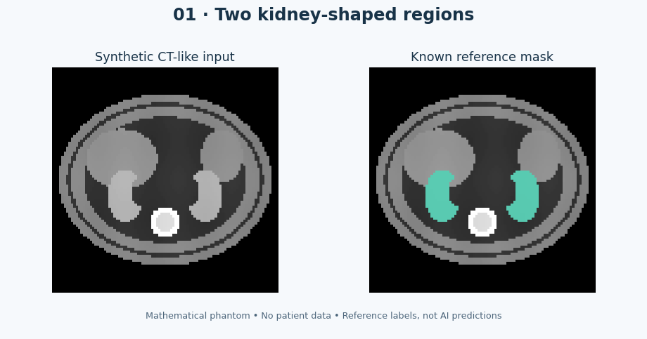
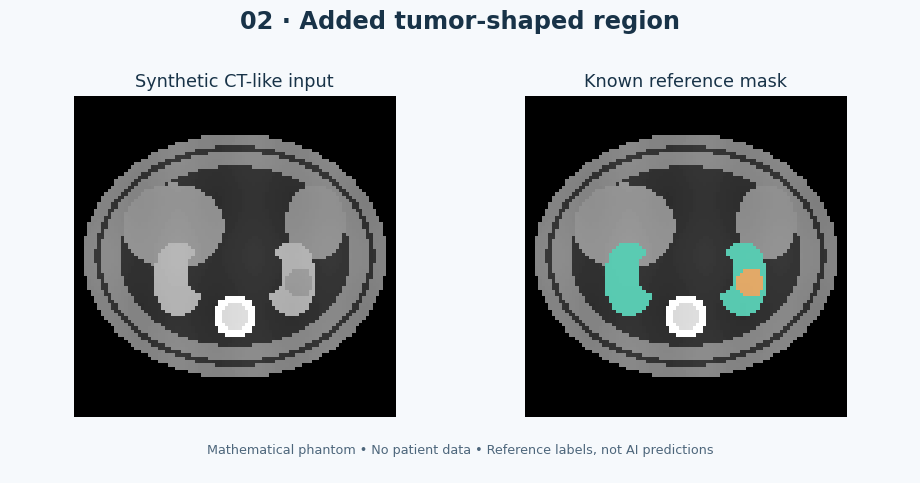
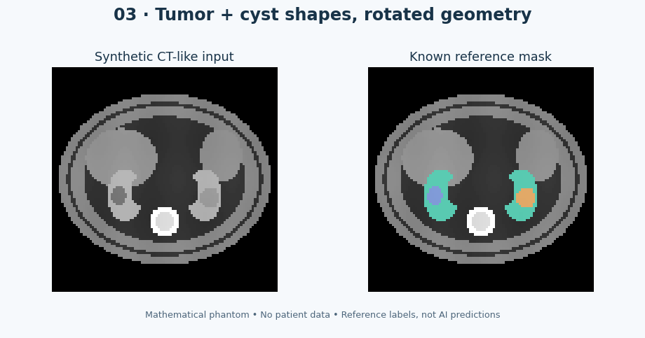

SYNTHETIC · NO PATIENT DATA
01 · Two kidney-shaped regions

96 × 96 × 64 voxels · 2.5 × 2.5 × 3.0 mm spacing
Three small synthetic volumes with known masks, plus official real CT downloads for research testing.
ZIP includes all three examples, masks, previews, instructions and links to the real scans. Unzip it first. For image input, choose a file from the images folder.
Mathematical CT-like phantoms for checking file handling and geometry. They are deliberately simplified and cannot establish real-patient accuracy.

96 × 96 × 64 voxels · 2.5 × 2.5 × 3.0 mm spacing

96 × 96 × 64 voxels · 2.5 × 2.5 × 3.0 mm spacing

96 × 96 × 64 voxels · 2.5 × 2.5 × 4.0 mm spacing
These KiTS23 scans and matching reference masks were successfully loaded by our native engine on 28 September. Download from the original publishers using the links below.
| Case | Input scan | Known labels |
|---|---|---|
| case_00002 | Download real CT 97.2 MiB · .nii.gz | Reference mask 365 KiB · .nii.gz |
| case_00003 | Download real CT 113.2 MiB · .nii.gz | Reference mask 370 KiB · .nii.gz |
Credit: Nicholas Heller and the KiTS23 contributors. KiTS23 data terms: CC BY-NC-SA 4.0. The maintainers require contact for commercial purposes. Case 00002 was used for training and case 00003 for held-out patch validation in our small engineering probe; these downloads are not an independent clinical test set.
The full scans expand considerably in memory. Use a desktop, retain the .nii.gz extension and keep each scan beside its matching mask in a separate case folder.
Full instructions · Synthetic geometry and counts · Real-file sources and hashes · Native loader checks